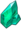
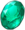

Um bardo que parece ter chegado por algum vento desconhecido - às vezes canta canções tão antigas quanto as colinas, e outras vezes canta poemas novos e novos. Gosta de maçãs e de lugares animados, mas não é fã de queijo ou qualquer coisa pegajosa. Ao usar seu poder Anemo para controlar o vento, muitas vezes aparece como penas, pois ele gosta do que parece leve e arejado.
Venti tem uma atitude bastante travessa, e gosta de rimar na fala que, no entanto, se for mandado parar, ele parará imediatamente. Ele vê um certo valor na música a ponto de nomear sua própria lira, dizendo "todo ser merece um nome para ser invocado e tecido em uma canção". Ele também é bastante ousado, mostrado muitas vezes tanto no mangá quanto no jogo, não temendo insultar ou ignorar aqueles que são supostamente poderosos.
Venti tem pele clara, olhos cor de água e uma constituição esguia. Ele tem cabelo azul escuro que beira o preto, com tranças gêmeas curtas que desbotam em uma cor aqua que brilha em ciano brilhante ao lançar magia. Ele usa uma blusa branca com babados com uma cintura de couro parecida com um espartilho, junto com shorts azul-petróleo com bordados dourados e uma capa azul-petróleo combinando presa por um laço azul profundo e dourado. Venti também usa meias brancas com 3 diamantes de ouro em cada perna e um chapéu em forma de boina com uma Cecília, que é sua flor favorita. Ele carrega uma lira de madeira com cordas azuis imbuídas com o poder de Anemo.
Na época em que o bardo viajante Venti estava em Mondstadt há apenas alguns meses, sua renda era muito menor do que a dos outros bardos mais estabelecidos da cidade. Mas assim que ele tivesse alguns Mora na panela de sua apresentação, você podia ter certeza que ele se apressaria para gastá-los no mesmo lugar todas as vezes - uma das tabernas da cidade. Infelizmente para Venti, sua aparência infantil significava que suas tentativas de adquirir álcool falhavam a cada passo. A primeira vez que lhe foi recusado o serviço, foi ouvido resmungando: "Tenho certeza de que não havia tais regulamentos absurdos da última vez que estive aqui ..." Assim que percebeu que a mesma regra se aplicava a todas as tabernas da cidade, ele decidiu que teria que mudar sua abordagem ... A estratégia que ele desenvolveu foi beber no trabalho - ou seja, tocar a lira enquanto segurava seu copo de vinho na boca, instando o público a comprar uma bebida para ele no bar, se quisesse seu desempenho em vez de dar-lhe Mora. A novidade tornou-o bastante popular em Mondstadt. Havia apenas um obstáculo - ele não conseguia evitar espirrar se um gato se aproximasse ... E se ele estivesse segurando uma taça de vinho na boca quando acontecesse ... desnecessário dizer, seria um desastre. Venti, portanto, tem uma regra de ouro ao selecionar um local para atuar, que é que não deve haver gatos nas proximidades. É mais fácil falar do que fazer - os gatos vadios de Mondstadt parecem se sentir atraídos por ele.

Ataque Normal:
Executa até 6 tiros consecutivos com um arco.
Ataque Carregado:
Execute um tiro certeiro mais preciso com Dano aumentado. Enquanto mira, ventos favoráveis se acumulam na ponta da flecha. Uma flecha totalmente carregada irá lidar com Dano Anemo.
Ataque Imersivo:
Dispara uma chuva de flechas no ar antes de cair e atingir o solo, distribuindo Dano de AdE no impacto.
| Dano de 1º Golpe | 20.4% + 20.4% |
|---|---|
| Dano de 2º Golpe | 44.4% |
| Dano de 3º Golpe | 52.4% |
| Dano de 4º Golpe | 26.1% + 26.1% |
| Dano de 5º Golpe | 50.7% |
| Dano de 6º Golpe | 71% |
| Disparo com Mira | 43.9% |
| Disparo com Mira com Energização Completa | 124% |
| Dano Durante a Queda | 56.8% |
| Dano de Queda de Alta/Baixa Altitude |
114% / 142% |

Ó vento sobre o qual todos os hinos e canções voam, leve esses caminhantes da Terra para o céu!
Manter Pressionado
Invoca um Domínio do Vento ainda maior com Venti como epicentro, lidando com Dano Anemo AdE e lançando inimigos afetados no ar. Depois de liberar a versão Hold dessa habilidade, Venti monta o vento no ar.
Os inimigos atingidos pelo Soneto para o Céu cairão no chão lentamente.
| Dano Apertado | 276% |
|---|---|
| Tempo de Recarga (apertado) | 6s |
| Dando Pressionado | 380% |
| Tempo de Recarga (pressionado) | 15s |

Dispara uma flecha feita de incontáveis ventos unidos, criando um enorme Stormeye que suga objetos e inimigos ao longo de seu caminho, lidando continuamente com Dano Anemo.
Absorção Elemental
Se o Olho da Tempestade entrar em contato com os elementos Hydro / Pyro / Cryo / Electro, ele gerará Dano elementar adicional desse tipo. A absorção elementar pode ocorrer apenas uma vez por uso.
| Dano ao Longo do Tempo | 47% |
|---|---|
| Dano Elemental Adicional | 23.5% |
| Duração | 8s |
| Energia Elemental | 60 |
Segurar Soneto para o Céu cria uma corrente ascendente que dura 20s.

Regenera 15 de energia para Venti após os efeitos da Grande Ode do Vento. Se ocorrer uma absorção elementar, isso também restaura 15 de energia para todos os personagens daquele elemento correspondente.
Diminui o consumo de energia de todos os membros do grupo em 20%.

Dispara 2 flechas adicionais por tiro certeiro, cada uma dando 33% do Dano da flecha original.
Skyward Sonnet diminui a RES Anemo do inimigo em 12% por 10s. Os inimigos lançados pelo Skyward Sonnet sofrem uma redução adicional de 12% no RES do Anemo e no RES física durante o vôo.

Aumenta o Nível da Wind's Grand Ode em 3. O nível máximo de atualização é 15.

Quando Venti pega um Orbe ou Partícula Elemental, ele recebe um Bônus Dano Anemo de 25% por 10s.

Aumente o nível do Skyward Sonnet em 3. O nível máximo de atualização é 15.
Os alvos que pegam DMG do Wind's Grand Ode têm seu RES do Anemo reduzido em 20%. Se ocorrer uma absorção elementar, então seu RES em direção ao elemento correspondente também é reduzido em 20%.

Esta construção aumenta os danos do Anemo e do Redemoinho de Venti, ao mesmo tempo que reduz a RES Elemental dos inimigos para o resto do seu grupo.

Aumenta a habilidade elemental e o Dano de explosão elemental em 24/30/36/42/48%.


(2) Dano Bonús de Anemo +15%
(4) Aumenta o Dano do Redemoinho em 60%. Diminui a RES Elemental do oponente para o elemento infundido no Redemoinho em 40% por 10s.
A ideia por trás dessa construção é disparar um tiro poderoso e totalmente carregado com Venti a cada 10 segundos, aproveitando as 2 flechas extras de sua primeira constelação, Splitting Gale.

Ao causar dano a um oponente, aumenta a taxa de CRIT em 8%. Máximo de 5 pilhas. Um acerto de CRIT remove todas as pilhas.
Aumenta o DMG contra os pontos fracos em 24/30/36/42/48%.
(2) Maestria Elemental +80
(4) Aumenta o Dano de Ataque Carregado em 35% se o personagem usar um Catalyst ou Bow.
| Ascensão | Max Lv. |  |
Material Elemental 1 | Material Elemental 2 | Especialidade Local | Material Comum |
|---|---|---|---|---|---|---|
| 1st | 20 | 20.000 |  Prata Turquesa Vayuda x1 |
Nenhum | Cecília x3 |
 COndensaçāo de Slime x3 |
| 2nd | 40 | 40.000 |  Fragmento de Turquesa Vayuda x3 |
 Semente de Furacāo x2 |
Cecília x10 |
COndensaçāo de Slime x15 |
| 3rd | 50 | 60.000 | Fragmento de Turquesa Vayuda x6 |
Semente de Furacāo x4 |
Cecília x20 |
Gota de Slime x12 |
| 4th | 60 | 80.000 |  Pedaço de Turquesa Vayuda x3 |
Semente de Furacāo x8 |
Cecília x30 |
Gota de Slime x18 |
| 5th | 70 | 240.000 | Pedaço de Turquesa Vayuda x6 |
Semente de Furacāo x12 |
Cecília x45 |
Essência de Slime x16 |
| 6th | 80 | ? |  Gema de de Turquesa Vayuda x6 |
Semente de Furacāo x20 |
Cecília x60 |
Essência de Slime x24 |
| Máximo | 90 | Max | Max | Max | Max | Max |